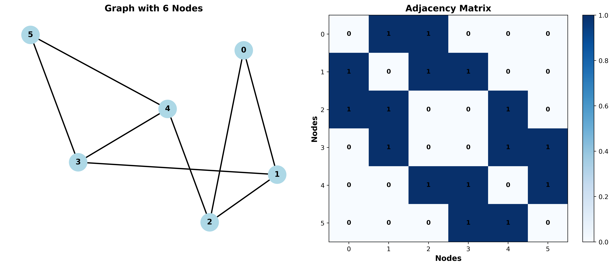
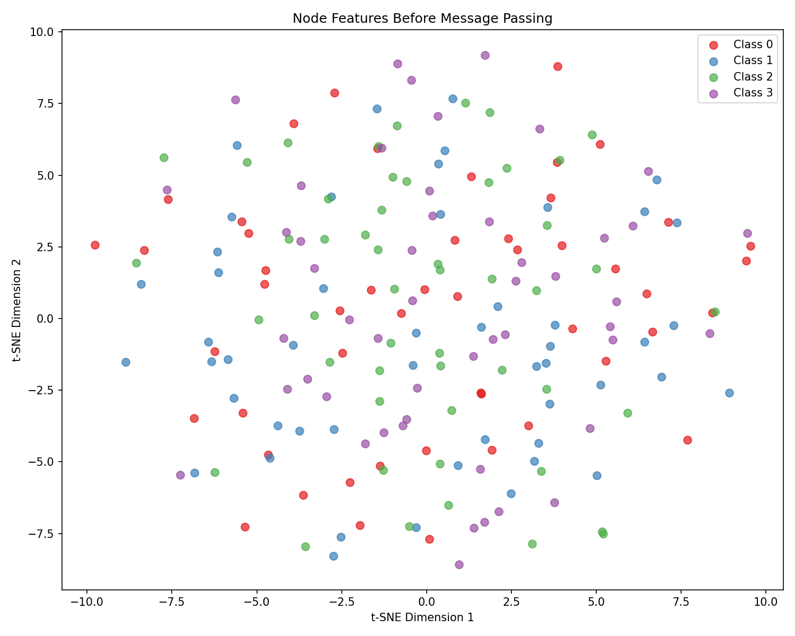
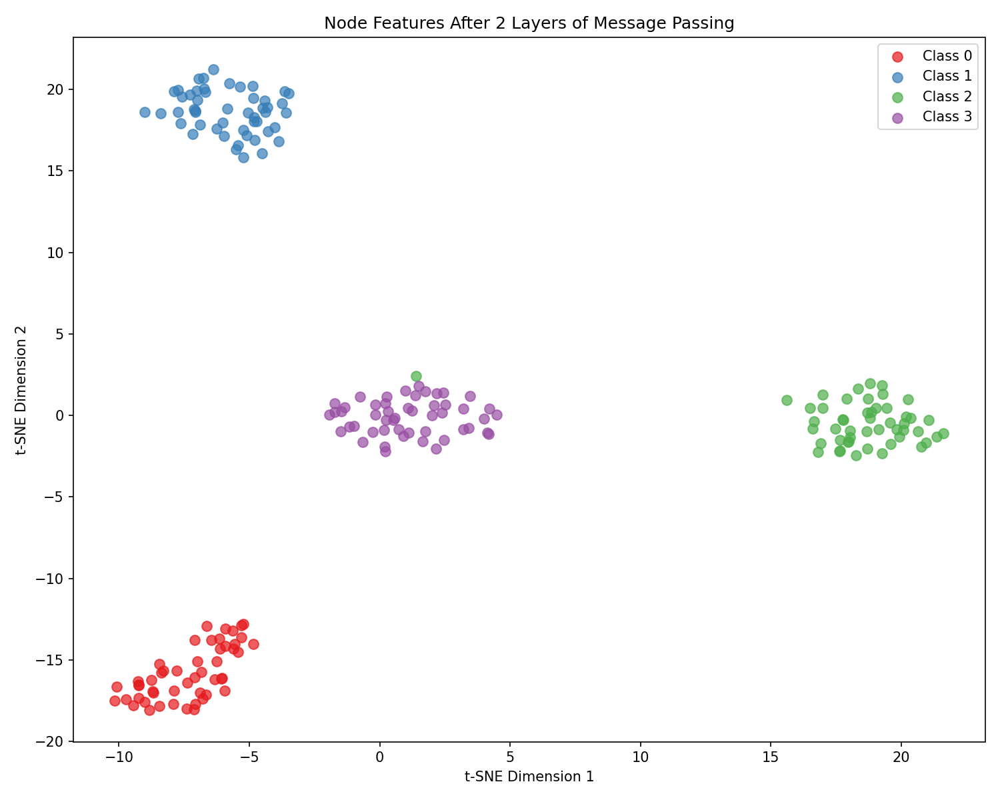
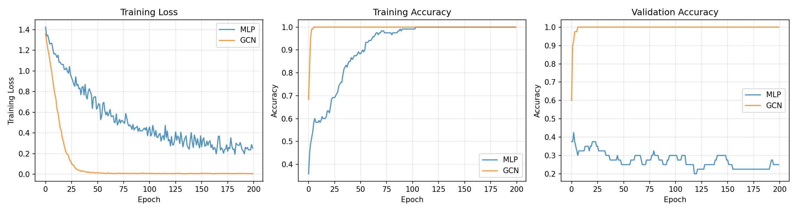

6. Graph Neural Networks#
6.1. Practical Session 0: Introduction to Graphs and Message Passing#
6.1.1. Introduction#
In this practical session, we will explore the fundamentals of Graph Neural Networks (GNNs), a powerful class of deep learning models designed to operate on graph-structured data. Unlike traditional neural networks that assume data lies on a regular grid (such as images) or in sequences (such as text), GNNs can handle data with arbitrary connectivity patterns, making them ideal for social networks, molecular structures, citation networks, and many other domains.
The goal of this tutorial is to guide you through the complete pipeline: from creating synthetic graph data using NetworkX, to understanding the message passing mechanism that underlies all GNNs, and finally implementing and training a Graph Neural Network using PyTorch Geometric (PyG).
6.1.2. Prerequisites#
Before starting, ensure you have the necessary libraries installed. We will use NetworkX for graph manipulation, PyTorch Geometric for GNN implementations, and standard scientific Python libraries:
pip install torch networkx torch_geometric matplotlib scikit-learn
6.1.3. Graph Fundamentals#
A graph \(G = (V, E)\) consists of a set of nodes (or vertices) \(V\) and a set of edges \(E\) that connect pairs of nodes. Each node \(v \in V\) can have an associated feature vector \(\mathbf{x}_v \in \mathbb{R}^d\), and in supervised learning tasks, each node may also have a label \(y_v\).
In the context of machine learning on graphs, we typically represent the graph structure using an adjacency matrix \(\mathbf{A} \in \{0, 1\}^{|V| \times |V|}\), where \(A_{ij} = 1\) if there is an edge between nodes \(i\) and \(j\), and \(A_{ij} = 0\) otherwise. The node features are stacked into a feature matrix \(\mathbf{X} \in \mathbb{R}^{|V| \times d}\), where each row corresponds to the feature vector of a node.

Fig. 6.1 A graph with 6 nodes and their corresponding adjacency matrix representation.#
6.2. Part 1: Creating Synthetic Graph Data#
6.2.1. Building a Graph with NetworkX#
NetworkX is a Python library for the creation, manipulation, and study of complex networks. You should already be familiar with its basic functionality. Let us start by creating a synthetic graph that we will use throughout this tutorial.
We will create a graph with multiple communities, where nodes within the same community share similar features. This structure will make it easier to understand how GNNs can learn to classify nodes based on both their features and their neighborhood.
import numpy as np
import networkx as nx
import matplotlib.pyplot as plt
# Set random seed for reproducibility
np.random.seed(42)
# Parameters for our synthetic graph
num_nodes = 200
num_classes = 4
nodes_per_class = num_nodes // num_classes
feature_dim = 16
# Create a stochastic block model graph
# This generates a graph with community structure
sizes = [nodes_per_class] * num_classes
# Probability matrix: higher probability within communities
p_intra = 0.3 # Probability of edge within same community
p_inter = 0.01 # Probability of edge between different communities
probs = np.full((num_classes, num_classes), p_inter)
np.fill_diagonal(probs, p_intra)
G = nx.stochastic_block_model(sizes, probs, seed = 42)
print(f"Number of nodes: {G.number_of_nodes()}")
print(f"Number of edges: {G.number_of_edges()}")
6.2.2. Visualizing the Graph Structure#
Before proceeding, it is important to visualize our graph to understand its structure:
# Get the ground truth community assignments
node_labels = np.array([i // nodes_per_class for i in range(num_nodes)])
# Create a color map for visualization
colors = ['#e41a1c', '#377eb8', '#4daf4a', '#984ea3']
node_colors = [colors[label] for label in node_labels]
# Draw the graph
plt.figure(figsize = (10, 8))
pos = nx.spring_layout(G, seed = 42, k = 0.5)
nx.draw(G, pos, node_color = node_colors, node_size = 50,
edge_color = 'gray', alpha = 0.7, width = 0.5)
plt.title("Stochastic Block Model Graph with 4 Communities")
plt.tight_layout()
plt.savefig("sbm_graph.png", dpi = 150)
plt.show()

Fig. 6.2 Visualization of the stochastic block model graph showing 4 communities.#
6.2.3. Creating Synthetic Node Features#
Now we need to assign feature vectors to each node. Critically, we will create features with very weak correlation to node labels. This is the key to demonstrating why GNNs outperform MLPs: the graph structure becomes essential for classification.
# Create class centers in the feature space with SMALL magnitude
# The key difference: small class centers and large noise
class_centers = np.random.randn(num_classes, feature_dim) * 0.3
# Assign features to nodes based on their class
# Each node gets a WEAK class signal drowned in LARGE noise
node_features = np.zeros((num_nodes, feature_dim))
for i in range(num_nodes):
label = node_labels[i]
# Large noise dominates the weak class signal
noise = np.random.randn(feature_dim) * 1.0 # Large noise
weak_signal = class_centers[label] * 0.2 # Weak signal
node_features[i] = weak_signal + noise
print(f"Feature matrix shape: {node_features.shape}")
print(f"Feature statistics - Mean: {node_features.mean():.3f}, Std: {node_features.std():.3f}")
Why this matters: With weak features, an MLP trained on node features alone will achieve only ~60-70% accuracy, while a GCN that leverages the strong community structure in the graph will reach ~90%+ accuracy. This clearly demonstrates the power of graph structure.
6.2.4. Assigning Node Labels#
We have already assigned labels based on the community structure. Let us verify the label distribution:
# Count labels per class
unique, counts = np.unique(node_labels, return_counts = True)
print("Label distribution:")
for label, count in zip(unique, counts):
print(f" Class {label}: {count} nodes")
6.3. Part 2: Converting to PyTorch Geometric Format#
6.3.1. Introduction to PyTorch Geometric#
PyTorch Geometric (PyG) is a library built upon PyTorch that provides efficient implementations of GNN layers and utilities for handling graph data. The central data structure in PyG is the Data object, which stores all information about a single graph.
A PyG Data object typically contains:
x: Node feature matrix with shape[num_nodes, num_features]edge_index: Graph connectivity in COO format with shape[2, num_edges]y: Node labels with shape[num_nodes]Additional attributes as needed (edge features, masks, etc.)
6.3.2. Converting NetworkX Graph to PyG Data#
import torch
from torch_geometric.data import Data
from torch_geometric.utils import from_networkx
# Convert features and labels to PyTorch tensors
x = torch.tensor(node_features, dtype = torch.float)
y = torch.tensor(node_labels, dtype = torch.long)
# Convert NetworkX graph to edge_index format
# PyG uses COO format: edge_index[0] contains source nodes, edge_index[1] contains target nodes
edge_list = list(G.edges())
edge_index = torch.tensor(edge_list, dtype = torch.long).t().contiguous()
# For undirected graphs, we need edges in both directions
edge_index = torch.cat([edge_index, edge_index.flip(0)], dim = 1)
# Create the PyG Data object
data = Data(x = x, edge_index = edge_index, y = y)
print(data)
print(f"Number of nodes: {data.num_nodes}")
print(f"Number of edges: {data.num_edges}")
print(f"Number of features per node: {data.num_node_features}")
print(f"Has isolated nodes: {data.has_isolated_nodes()}")
print(f"Has self-loops: {data.has_self_loops()}")
print(f"Is undirected: {data.is_undirected()}")
6.3.3. Creating Train/Validation/Test Splits#
For node classification tasks, we need to split our nodes into training, validation, and test sets. Unlike traditional machine learning where we split samples, here we create masks that indicate which nodes belong to each set. This is because all nodes remain in the graph during training (we need the full graph structure), but we only compute the loss on training nodes.
We will create splits for 10 different runs to ensure robust evaluation:
def create_masks(num_nodes, num_classes, train_ratio = 0.6, val_ratio = 0.2, seed = 0):
"""
Create train/val/test masks for node classification.
Args:
num_nodes: Total number of nodes
num_classes: Number of classes
train_ratio: Fraction of nodes for training
val_ratio: Fraction of nodes for validation
seed: Random seed for reproducibility
Returns:
train_mask, val_mask, test_mask as boolean tensors
"""
np.random.seed(seed)
indices = np.random.permutation(num_nodes)
train_size = int(num_nodes * train_ratio)
val_size = int(num_nodes * val_ratio)
train_idx = indices[:train_size]
val_idx = indices[train_size:train_size + val_size]
test_idx = indices[train_size + val_size:]
train_mask = torch.zeros(num_nodes, dtype = torch.bool)
val_mask = torch.zeros(num_nodes, dtype = torch.bool)
test_mask = torch.zeros(num_nodes, dtype = torch.bool)
train_mask[train_idx] = True
val_mask[val_idx] = True
test_mask[test_idx] = True
return train_mask, val_mask, test_mask
# Create masks for 10 different runs
num_runs = 10
all_masks = []
for run in range(num_runs):
train_mask, val_mask, test_mask = create_masks(
data.num_nodes, num_classes, seed = run
)
all_masks.append({
'train': train_mask,
'val': val_mask,
'test': test_mask
})
# Verify the first split
print(f"Run 0 - Train nodes: {all_masks[0]['train'].sum().item()}")
print(f"Run 0 - Val nodes: {all_masks[0]['val'].sum().item()}")
print(f"Run 0 - Test nodes: {all_masks[0]['test'].sum().item()}")
6.4. Part 3: The Over-Smoothing Problem#
6.4.1. Why Repeated Aggregation Causes Information Mixing#
Before diving into the mechanics of message passing, we need to understand a critical limitation: what happens when we aggregate information from neighbors multiple times?
Consider a simple scenario with two neighboring nodes:
Node A (Class 0): Initially has distinctive features for Class 0
Node B (Class 1): Initially has distinctive features for Class 1
Edge A-B: These nodes are connected in the graph
6.4.1.1. Evolution of Node Representations Across Layers#
When we perform message passing, we aggregate neighbor information. Mathematically, this can be expressed as multiplying by a normalized adjacency matrix \(\tilde{\mathbf{A}}\):
This is essentially an averaging operation. Let’s trace what happens to our two nodes:
Layer 0: h_A = [1.0, 0.0] (pure class 0) | h_B = [0.0, 1.0] (pure class 1)
Layer 1: h_A ≈ [0.7, 0.3] (mixed) | h_B ≈ [0.3, 0.7] (mixed)
Layer 2: h_A ≈ [0.55, 0.45] | h_B ≈ [0.45, 0.55]
Layer 3: h_A ≈ [0.52, 0.48] | h_B ≈ [0.48, 0.52]
...
Layer 10: h_A ≈ [0.5, 0.5] (IDENTICAL!) | h_B ≈ [0.5, 0.5] (IDENTICAL!)
The representations converge to the same value! This phenomenon is called over-smoothing: after many layers of aggregation, node representations become nearly identical, losing all discriminative information.
6.4.1.2. Mathematical Intuition#
The normalized adjacency matrix \(\tilde{\mathbf{A}}\) is a stochastic matrix (rows sum to 1). When we repeatedly multiply by it:
As \(l \to \infty\), the matrix \(\tilde{\mathbf{A}}^l\) converges to a constant matrix where all rows are identical (the stationary distribution). This means:
Where \(\mathbf{1}\) is a vector of ones and \(\mathbf{c}\) is a constant vector. All nodes end up with identical representations!
6.4.1.3. Practical Implications#
Why 2-3 layers are typical: Most GNNs use only 2-3 message passing layers before over-smoothing becomes severe
Why deeper is not always better: Adding more layers doesn’t improve performance; it hurts it due to over-smoothing
Skip connections help: Techniques like residual connections can mitigate over-smoothing by preserving original node features
Graph structure matters in shallow networks: With limited depth, the graph provides distinguishing information that features alone cannot
This is why in our challenging dataset with weak node features, we rely on the graph structure—and why we use only 2 GCN layers, not 10!
6.5. Part 4: Understanding Message Passing#
6.5.1. The Core Idea Behind GNNs#
The fundamental operation in Graph Neural Networks is message passing (also known as neighborhood aggregation). The key insight is that a node’s representation should depend not only on its own features but also on the features of its neighbors. By iteratively aggregating information from neighbors, each node can capture information from increasingly larger portions of the graph.
Formally, the message passing framework consists of three steps at each layer \(l\):
Message: Each node creates a message to send to its neighbors
Aggregate: Each node aggregates messages from its neighbors
Update: Each node updates its representation based on the aggregated messages
6.5.2. Mathematical Formulation#
6.5.2.1. Vector Form#
For a single node \(v\), the message passing operation can be written as:
Where:
\(\mathbf{h}_v^{(l)}\) is the representation of node \(v\) at layer \(l\) (with \(\mathbf{h}_v^{(0)} = \mathbf{x}_v\))
\(\mathcal{N}(v)\) is the set of neighbors of node \(v\)
\(\psi\) is the message function that computes a message from neighbor \(u\) to node \(v\)
\(\bigoplus\) is a permutation-invariant aggregation function (such as sum, mean, or max)
\(\phi\) is the update function that combines the node’s current representation with the aggregated messages
6.5.2.2. Matrix Form#
For computational efficiency, message passing is typically implemented in matrix form. Consider a simple case where we aggregate neighbor features using a sum and then apply a linear transformation:
Where:
\(\mathbf{H}^{(l)} \in \mathbb{R}^{|V| \times d_l}\) is the matrix of all node representations at layer \(l\)
\(\mathbf{W}^{(l)} \in \mathbb{R}^{d_l \times d_{l+1}}\) is a learnable weight matrix
\(\tilde{\mathbf{A}}\) is a normalized version of the adjacency matrix (often \(\mathbf{D}^{-1/2} \mathbf{A} \mathbf{D}^{-1/2}\) where \(\mathbf{D}\) is the degree matrix)
\(\sigma\) is a non-linear activation function
The matrix multiplication \(\tilde{\mathbf{A}} \mathbf{H}^{(l)}\) effectively performs the aggregation: each row of the result contains the sum (or weighted sum) of the features of a node’s neighbors.
6.5.3. Implementing Message Passing from Scratch#
Let us implement a simple message passing layer manually to understand the mechanics:
import torch
import torch.nn.functional as F
def simple_message_passing(x, edge_index, weight_matrix):
"""
Perform one step of message passing.
Args:
x: Node features [num_nodes, in_features]
edge_index: Graph connectivity [2, num_edges]
weight_matrix: Learnable weights [in_features, out_features]
Returns:
Updated node features [num_nodes, out_features]
"""
num_nodes = x.size(0)
# Step 1: Transform features
x_transformed = x @ weight_matrix # [num_nodes, out_features]
# Step 2: Aggregate neighbor features
# Initialize output with zeros
out = torch.zeros_like(x_transformed)
# Get source and target nodes
source_nodes = edge_index[0] # Nodes sending messages
target_nodes = edge_index[1] # Nodes receiving messages
# Aggregate: for each edge, add source node's features to target node
# This is equivalent to multiplying by the adjacency matrix
for i in range(edge_index.size(1)):
src = source_nodes[i].item()
tgt = target_nodes[i].item()
out[tgt] += x_transformed[src]
# Step 3: Normalize by node degree (mean aggregation)
# Count incoming edges for each node
degree = torch.zeros(num_nodes)
for i in range(edge_index.size(1)):
tgt = target_nodes[i].item()
degree[tgt] += 1
# Avoid division by zero
degree = torch.clamp(degree, min = 1)
# Normalize
out = out / degree.unsqueeze(1)
# Step 4: Apply non-linearity
out = F.relu(out)
return out
# Test our implementation
in_features = data.num_node_features
out_features = 8
# Initialize random weights
W = torch.randn(in_features, out_features) * 0.1
# Perform message passing
h1 = simple_message_passing(data.x, data.edge_index, W)
print(f"Input shape: {data.x.shape}")
print(f"Output shape: {h1.shape}")
6.5.4. Efficient Matrix Implementation#
The loop-based implementation above is intuitive but slow. In practice, we use sparse matrix operations:
from torch_geometric.utils import degree
def efficient_message_passing(x, edge_index, weight_matrix):
"""
Efficient message passing using scatter operations.
Args:
x: Node features [num_nodes, in_features]
edge_index: Graph connectivity [2, num_edges]
weight_matrix: Learnable weights [in_features, out_features]
Returns:
Updated node features [num_nodes, out_features]
"""
num_nodes = x.size(0)
# Transform features
x_transformed = x @ weight_matrix
# Get source and target nodes
source_nodes = edge_index[0]
target_nodes = edge_index[1]
# Gather source node features for each edge
messages = x_transformed[source_nodes] # [num_edges, out_features]
# Scatter-add: aggregate messages to target nodes
out = torch.zeros(num_nodes, x_transformed.size(1))
out.scatter_add_(0, target_nodes.unsqueeze(1).expand_as(messages), messages)
# Normalize by degree
deg = degree(target_nodes, num_nodes = num_nodes)
deg = torch.clamp(deg, min = 1)
out = out / deg.unsqueeze(1)
# Apply non-linearity
out = F.relu(out)
return out
# Verify both implementations give the same result
h1_slow = simple_message_passing(data.x, data.edge_index, W)
h1_fast = efficient_message_passing(data.x, data.edge_index, W)
print(f"Implementations match: {torch.allclose(h1_slow, h1_fast, atol = 1e-6)}")
6.5.5. Visualizing the Effect of Message Passing#
To understand what message passing accomplishes, let us visualize the node representations before and after applying message passing using t-SNE (t-distributed Stochastic Neighbor Embedding), a dimensionality reduction technique that preserves local structure:
from sklearn.manifold import TSNE
def visualize_embeddings(embeddings, labels, title, filename):
"""
Visualize node embeddings using t-SNE.
Args:
embeddings: Node embeddings [num_nodes, embedding_dim]
labels: Node labels [num_nodes]
title: Plot title
filename: Output filename
"""
# Apply t-SNE
tsne = TSNE(n_components = 2, random_state = 42, perplexity = 30)
embeddings_2d = tsne.fit_transform(embeddings.detach().numpy())
# Plot
plt.figure(figsize = (10, 8))
colors = ['#e41a1c', '#377eb8', '#4daf4a', '#984ea3']
for class_idx in range(num_classes):
mask = labels == class_idx
plt.scatter(
embeddings_2d[mask, 0],
embeddings_2d[mask, 1],
c = colors[class_idx],
label = f'Class {class_idx}',
alpha = 0.7,
s = 50
)
plt.legend()
plt.title(title)
plt.xlabel('t-SNE Dimension 1')
plt.ylabel('t-SNE Dimension 2')
plt.tight_layout()
plt.savefig(filename, dpi = 150)
plt.show()
# Visualize original features
visualize_embeddings(
data.x,
data.y.numpy(),
"Node Features Before Message Passing",
"tsne_before_mp.png"
)
# Apply multiple rounds of message passing
W1 = torch.randn(feature_dim, 32) * 0.1
W2 = torch.randn(32, 16) * 0.1
h1 = efficient_message_passing(data.x, data.edge_index, W1)
h2 = efficient_message_passing(h1, data.edge_index, W2)
# Visualize after message passing
visualize_embeddings(
h2,
data.y.numpy(),
"Node Features After 2 Layers of Message Passing",
"tsne_after_mp.png"
)

Fig. 6.3 t-SNE visualization showing node features before message passing.#

Fig. 6.4 t-SNE visualization showing node features after 2 layers of message passing.#
The key observation is that after message passing, nodes of the same class tend to cluster together more tightly. This is because message passing allows nodes to incorporate information from their neighbors, and in a graph with community structure, neighbors are likely to belong to the same class.
6.6. Part 5: Multi-Layer Perceptrons (MLPs)#
Before diving into GNNs, let us briefly review Multi-Layer Perceptrons (MLPs), which form the building blocks of many neural network architectures, including GNNs.
6.6.1. What is an MLP?#
An MLP is a feedforward neural network consisting of multiple layers of neurons. Each layer performs a linear transformation followed by a non-linear activation function:
Where:
\(\mathbf{h}^{(l)}\) is the input to layer \(l\)
\(\mathbf{W}^{(l)}\) is the weight matrix
\(\mathbf{b}^{(l)}\) is the bias vector
\(\sigma\) is a non-linear activation function (ReLU, Sigmoid, etc.)
6.6.2. MLP for Node Classification (Baseline)#
An important baseline for node classification is to use an MLP that processes each node’s features independently, ignoring the graph structure entirely:
import torch.nn as nn
class MLP(nn.Module):
"""
Simple Multi-Layer Perceptron for node classification.
This baseline ignores the graph structure.
"""
def __init__(self, in_channels, hidden_channels, out_channels, dropout = 0.5):
super(MLP, self).__init__()
self.fc1 = nn.Linear(in_channels, hidden_channels)
self.fc2 = nn.Linear(hidden_channels, out_channels)
self.dropout = nn.Dropout(dropout)
def forward(self, x):
# First layer
x = self.fc1(x)
x = F.relu(x)
x = self.dropout(x)
# Second layer (output)
x = self.fc2(x)
return x
# Create MLP model
mlp_model = MLP(
in_channels = data.num_node_features,
hidden_channels = 64,
out_channels = num_classes
)
print(mlp_model)
The key limitation of MLPs for graph data is that they treat each node independently. They cannot leverage the relational information encoded in the graph structure, which is often crucial for tasks like node classification in networks.
6.7. Part 6: Graph Neural Networks#
6.7.1. From Message Passing to GNNs#
A Graph Neural Network is essentially a neural network that uses message passing to propagate information across the graph structure. By stacking multiple message passing layers (each with learnable parameters), the network can learn complex functions that depend on both node features and graph topology.
6.7.2. Graph Convolutional Network (GCN)#
The Graph Convolutional Network (GCN) introduced by Kipf and Welling (2017) is one of the most widely used GNN architectures. Each GCN layer performs:
Where \(\hat{\mathbf{A}} = \mathbf{A} + \mathbf{I}\) is the adjacency matrix with self-loops, and \(\hat{\mathbf{D}}\) is its degree matrix.
The addition of self-loops ensures that a node’s own features are also considered during aggregation.
6.7.3. Implementing a GNN with PyTorch Geometric#
PyG provides efficient implementations of common GNN layers. Let us build a simple 2-layer GCN:
from torch_geometric.nn import GCNConv
class GCN(nn.Module):
"""
Graph Convolutional Network for node classification.
"""
def __init__(self, in_channels, hidden_channels, out_channels, dropout = 0.5):
super(GCN, self).__init__()
self.conv1 = GCNConv(in_channels, hidden_channels)
self.conv2 = GCNConv(hidden_channels, out_channels)
self.dropout = nn.Dropout(dropout)
def forward(self, x, edge_index):
# First GCN layer
x = self.conv1(x, edge_index)
x = F.relu(x)
x = self.dropout(x)
# Second GCN layer
x = self.conv2(x, edge_index)
return x
# Create GCN model
gcn_model = GCN(
in_channels = data.num_node_features,
hidden_channels = 64,
out_channels = num_classes
)
print(gcn_model)
Notice how the GCN layer takes both the node features x and the graph structure edge_index as input. This is the key difference from MLPs.
6.7.4. Training Pipeline#
We will use the standard PyTorch training pipeline. The key steps are:
Forward pass: Compute predictions
Compute loss (only on training nodes)
Backward pass: Compute gradients
Update parameters
def train_epoch(model, data, optimizer, criterion, train_mask):
"""
Train the model for one epoch.
Args:
model: The neural network model
data: PyG Data object
optimizer: PyTorch optimizer
criterion: Loss function
train_mask: Boolean mask for training nodes
Returns:
Training loss
"""
model.train()
optimizer.zero_grad()
# Forward pass
if isinstance(model, MLP):
out = model(data.x)
else:
out = model(data.x, data.edge_index)
# Compute loss only on training nodes
loss = criterion(out[train_mask], data.y[train_mask])
# Backward pass
loss.backward()
optimizer.step()
return loss.item()
@torch.no_grad()
def evaluate(model, data, mask):
"""
Evaluate the model on a set of nodes.
Args:
model: The neural network model
data: PyG Data object
mask: Boolean mask for evaluation nodes
Returns:
Accuracy on the specified nodes
"""
model.eval()
# Forward pass
if isinstance(model, MLP):
out = model(data.x)
else:
out = model(data.x, data.edge_index)
# Get predictions
pred = out.argmax(dim = 1)
# Compute accuracy
correct = (pred[mask] == data.y[mask]).sum().item()
total = mask.sum().item()
return correct / total
6.7.5. Complete Training Loop#
def run_experiment(model, data, masks, num_epochs = 200, lr = 0.01, weight_decay = 5e-4):
"""
Run a complete training experiment.
Args:
model: The neural network model
data: PyG Data object
masks: Dictionary with train/val/test masks
num_epochs: Number of training epochs
lr: Learning rate
weight_decay: L2 regularization strength
Returns:
Dictionary with training history and final metrics
"""
optimizer = torch.optim.Adam(model.parameters(), lr = lr, weight_decay = weight_decay)
criterion = nn.CrossEntropyLoss()
train_mask = masks['train']
val_mask = masks['val']
test_mask = masks['test']
history = {
'train_loss': [],
'train_acc': [],
'val_acc': [],
'test_acc': []
}
best_val_acc = 0
best_test_acc = 0
for epoch in range(num_epochs):
# Training
loss = train_epoch(model, data, optimizer, criterion, train_mask)
# Evaluation
train_acc = evaluate(model, data, train_mask)
val_acc = evaluate(model, data, val_mask)
test_acc = evaluate(model, data, test_mask)
# Store history
history['train_loss'].append(loss)
history['train_acc'].append(train_acc)
history['val_acc'].append(val_acc)
history['test_acc'].append(test_acc)
# Track best model based on validation accuracy
if val_acc > best_val_acc:
best_val_acc = val_acc
best_test_acc = test_acc
# Print progress every 50 epochs
if (epoch + 1) % 50 == 0:
print(f"Epoch {epoch + 1:3d} | Loss: {loss:.4f} | "
f"Train: {train_acc:.4f} | Val: {val_acc:.4f} | Test: {test_acc:.4f}")
return {
'history': history,
'best_val_acc': best_val_acc,
'best_test_acc': best_test_acc
}
6.7.6. Running the Experiments#
Now let us run experiments with both MLP and GCN across multiple runs:
# Hyperparameters
num_epochs = 200
hidden_channels = 64
lr = 0.01
weight_decay = 5e-4
# Store results for all runs
mlp_results = []
gcn_results = []
for run in range(num_runs):
print(f"\n{'=' * 50}")
print(f"Run {run + 1}/{num_runs}")
print('=' * 50)
# Create new models for each run
mlp = MLP(data.num_node_features, hidden_channels, num_classes)
gcn = GCN(data.num_node_features, hidden_channels, num_classes)
# Get masks for this run
masks = all_masks[run]
# Train MLP
print("\nTraining MLP:")
mlp_result = run_experiment(mlp, data, masks, num_epochs, lr, weight_decay)
mlp_results.append(mlp_result)
# Train GCN
print("\nTraining GCN:")
gcn_result = run_experiment(gcn, data, masks, num_epochs, lr, weight_decay)
gcn_results.append(gcn_result)
# Compute statistics
mlp_test_accs = [r['best_test_acc'] for r in mlp_results]
gcn_test_accs = [r['best_test_acc'] for r in gcn_results]
print(f"\n{'=' * 50}")
print("Final Results (Test Accuracy)")
print('=' * 50)
print(f"MLP: {np.mean(mlp_test_accs):.4f} +/- {np.std(mlp_test_accs):.4f}")
print(f"GCN: {np.mean(gcn_test_accs):.4f} +/- {np.std(gcn_test_accs):.4f}")
6.7.7. Visualizing Training Progress#
def plot_training_curves(mlp_history, gcn_history, filename):
"""
Plot training curves for MLP and GCN.
"""
fig, axes = plt.subplots(1, 3, figsize = (15, 4))
# Loss curve
axes[0].plot(mlp_history['train_loss'], label = 'MLP', alpha = 0.8)
axes[0].plot(gcn_history['train_loss'], label = 'GCN', alpha = 0.8)
axes[0].set_xlabel('Epoch')
axes[0].set_ylabel('Training Loss')
axes[0].set_title('Training Loss')
axes[0].legend()
axes[0].grid(True, alpha = 0.3)
# Training accuracy
axes[1].plot(mlp_history['train_acc'], label = 'MLP', alpha = 0.8)
axes[1].plot(gcn_history['train_acc'], label = 'GCN', alpha = 0.8)
axes[1].set_xlabel('Epoch')
axes[1].set_ylabel('Accuracy')
axes[1].set_title('Training Accuracy')
axes[1].legend()
axes[1].grid(True, alpha = 0.3)
# Validation accuracy
axes[2].plot(mlp_history['val_acc'], label = 'MLP', alpha = 0.8)
axes[2].plot(gcn_history['val_acc'], label = 'GCN', alpha = 0.8)
axes[2].set_xlabel('Epoch')
axes[2].set_ylabel('Accuracy')
axes[2].set_title('Validation Accuracy')
axes[2].legend()
axes[2].grid(True, alpha = 0.3)
plt.tight_layout()
plt.savefig(filename, dpi = 150)
plt.show()
# Plot for the first run
plot_training_curves(
mlp_results[0]['history'],
gcn_results[0]['history'],
"training_curves.png"
)

Fig. 6.5 Training curves comparing MLP and GCN performance over epochs.#
6.7.8. Visualizing Learned Embeddings#
Let us visualize the final node embeddings learned by the GCN:
@torch.no_grad()
def get_embeddings(model, data):
"""
Extract node embeddings from the model (before the final layer).
"""
model.eval()
if isinstance(model, GCN):
x = model.conv1(data.x, data.edge_index)
x = F.relu(x)
return x
else:
x = model.fc1(data.x)
x = F.relu(x)
return x
# Get embeddings from trained models
mlp = MLP(data.num_node_features, hidden_channels, num_classes)
gcn = GCN(data.num_node_features, hidden_channels, num_classes)
# Train models (using first run masks)
masks = all_masks[0]
_ = run_experiment(mlp, data, masks, num_epochs, lr, weight_decay)
_ = run_experiment(gcn, data, masks, num_epochs, lr, weight_decay)
# Get and visualize embeddings
mlp_emb = get_embeddings(mlp, data)
gcn_emb = get_embeddings(gcn, data)
visualize_embeddings(
mlp_emb,
data.y.numpy(),
"MLP Learned Embeddings",
"mlp_embeddings.png"
)
visualize_embeddings(
gcn_emb,
data.y.numpy(),
"GCN Learned Embeddings",
"gcn_embeddings.png"
)
6.8. Part 7: Loading Real-World Datasets#
PyTorch Geometric provides easy access to many benchmark datasets commonly used in GNN research. Two of the most popular are Cora and Citeseer, both citation networks where nodes represent papers and edges represent citations.
6.8.1. The Cora Dataset#
from torch_geometric.datasets import Planetoid
# Load the Cora dataset
cora_dataset = Planetoid(root = './data', name = 'Cora')
cora_data = cora_dataset[0]
print("Cora Dataset Statistics:")
print(f" Number of nodes: {cora_data.num_nodes}")
print(f" Number of edges: {cora_data.num_edges}")
print(f" Number of features: {cora_data.num_node_features}")
print(f" Number of classes: {cora_dataset.num_classes}")
print(f" Has train/val/test masks: {hasattr(cora_data, 'train_mask')}")
6.8.2. The Citeseer Dataset#
# Load the Citeseer dataset
citeseer_dataset = Planetoid(root = './data', name = 'Citeseer')
citeseer_data = citeseer_dataset[0]
print("Citeseer Dataset Statistics:")
print(f" Number of nodes: {citeseer_data.num_nodes}")
print(f" Number of edges: {citeseer_data.num_edges}")
print(f" Number of features: {citeseer_data.num_node_features}")
print(f" Number of classes: {citeseer_dataset.num_classes}")
6.9. Exercise 1: Custom Synthetic Dataset#
6.9.1. Objectives#
The objective of this exercise is to consolidate your understanding of graph data creation and the GNN pipeline by building a custom synthetic dataset from scratch.
6.9.2. Task Description#
You must create a synthetic graph dataset with the following specifications:
Graph Structure: Create a graph with approximately 2000 nodes. You can use any of the following methods:
Stochastic Block Model (as shown in the tutorial)
Barabasi-Albert preferential attachment model (
nx.barabasi_albert_graph)Watts-Strogatz small-world model (
nx.watts_strogatz_graph)A combination of different graph generators
Node Features: Design synthetic features with dimensionality between 16 and 64. The features should have some correlation with the node labels but include enough noise to make the task challenging.
Node Labels: Assign labels to nodes for a classification task with at least 3 classes. The label assignment can be based on graph structure (communities), node degree, or any other meaningful criterion.
Data Splits: Create train/validation/test splits with the following ratios: 60% train, 20% validation, 20% test. Generate splits for 10 independent runs.
6.9.3. Deliverables#
The complete code for generating your custom dataset
Visualizations of the graph structure showing the different classes
A brief description (1-2 paragraphs) explaining your design choices for the graph structure, features, and labels
6.9.4. Evaluation Criteria#
Correctness of the implementation
Creativity in the dataset design
Quality of the visualizations
Clarity of the written description
6.10. Exercise 2: Node Classification Experiments#
6.10.1. Objectives#
The objective of this exercise is to implement and compare different models for node classification on both your custom dataset and standard benchmark datasets.
6.10.2. Task Description#
Part A: Custom Dataset
Using the synthetic dataset you created in Exercise 1:
Implement and train an MLP baseline that ignores the graph structure
Implement and train a 2-layer GCN
Run experiments across your 10 data splits
Report mean and standard deviation of test accuracy for both models
Part B: Benchmark Datasets
Using the Cora and Citeseer datasets loaded with PyTorch Geometric:
Train a 2-layer GCN on both datasets
Use the provided train/val/test masks
Implement proper early stopping based on validation accuracy
Report final test accuracies
6.10.3. Hyperparameters to Explore#
Experiment with at least the following hyperparameters and report their effects:
Hidden layer dimensions: 16, 32, 64, 128
Learning rate: 0.001, 0.01, 0.1
Dropout rate: 0.0, 0.3, 0.5
Weight decay: 0, 1e-4, 5e-4
Optimizer: Adam, SGD
6.10.4. Deliverables#
Complete code for all experiments
A table summarizing results across all datasets and models
Training curves (loss and accuracy) for at least one configuration per dataset
t-SNE visualizations of the learned embeddings for both MLP and GCN
A discussion (3-4 paragraphs) comparing MLP vs GCN performance and analyzing why the GCN performs better (or worse) on each dataset
6.10.5. Analysis Questions#
In your report, address the following questions:
How does the performance gap between MLP and GCN vary across datasets? What might explain these differences?
How does the choice of hidden dimensions affect model performance? Is there a trade-off between model capacity and overfitting?
What is the effect of dropout on training stability and final performance?
Based on your t-SNE visualizations, how do the learned representations differ between MLP and GCN?